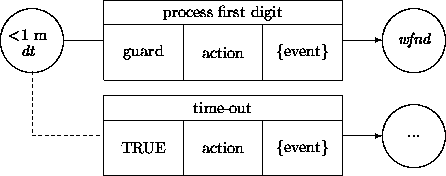

|
Chapter 20: Interaction Designs |
In this chapter, we focus on the design of object interaction scenarios. In previous chapters, we distinguished call/reply-style ops from asynchronous one-way sends. We singled out bidirectional ops in part to obtain a simple foothold on structured bidirectional message passing, as opposed to raw notifications from one object to another.
A synchronized bidirectional op represents the most familiar framework for interaction between objects, procedural invocation. A client asks a server to do something and waits until it is done, obtaining back any results the receiver is willing to provide.
The object-oriented paradigm supports a much richer set of communications strategies and protocols than can be expressed using blocking procedures. In this chapter we discuss several variations, while also demonstrating underlying techniques enabling the design of additional protocols and idioms.
The most basic form of bidirectional interaction is for some object a to send a one-way message to another object b, who in turn sends back a message to a, and so on.
These designs are often termed callback protocols, since the recipient of a message ``calls back'' its sender by issuing a message to it. They are also very similar to designs based on continuations in programming languages such as scheme [1]. In fact, the usages are for most purposes identical. A good example is interaction with a timer:
class BeeperTimer
delayer: Delayer;
op alarm(secs: time, b: DelayedBeeper) {
delayer.delay(secs); b.beep };
end
class DelayedBeeper
t: BeeperTimer;
op beep ... ;
op beepAfter(secs: time) { t.alarm(secs, self) }
end
Here, the DelayedBeeper object is free to do other things after processing beepAfter. It is later told by the BeeperTimer when it should beep.
This is a useful strategy for designing interactions that involve timers of any sort. However, it is difficult to extend this example for such purposes, since the exact message to send back ( beep) is hard-wired into the definition of the timer. In keeping with the analysis tactics of Chapter 6, this operation should be decoupled so the timer may be used for purposes other than controlling beepers. This can be arranged via wrappers:
class Timer ...
op alarm(secs: time, action: Wrapper) {
delayer.delay(secs); action.send }
end
class DelayedBeeper ...
op beepAfter(secs: time) { t.alarm(secs, WRAP(beep)) }
end
A beneficial by-product of this wrapping is that the sender does not need to reveal its identity to the receiver. Similarly, if one object replies to a callback argument regardless of who the actual sender of an operation was, then sets of objects may more securely interact, assuming design conventions are set up accordingly.
Callbacks may be ``passed through'' intermediaries. For example, if we wanted Dispenser objects to notify senders when their controlled DispenserDoors were opened, we might write it using the abstract classes:
class DispenserDoor isOpen: bool; op close ==> ~isOpen' end op raise(ack: Wrapper) ==> isOpen', ack.call' end end class Dispenser ... door: DispenserDoor; op raiseDoor(ack: Wrapper) ==> door.raise(ack)'' end end
This strategy makes it easier to express designs in which an object delegates tasks to helper objects. The helper, rather than the host may send back any results associated with an operation.
While they may look a bit esoteric, callbacks are actually lower level constructs than those underlying standard procedure-style interaction. In fact, it is possible to replace all blocking procedure-style interactions with callbacks. The mechanics for doing so are not much fun, but they are in part automatable through tools. Such maneuvers might even be necessary design steps if the system needs to be implemented using distributed frameworks supporting only one-way primitives.
For a prototypical example, consider an interaction in which an object of some class Client requests and receives something from an object of class Server. To avoid illustrating too many things at once, we will hard-wire the messages:
class Server
op get: int { reply 17 }
end
class Client
op ask(s: Server) { print(s.get) }
end
This may be transformed into:
class Server_2
op get(c: Client_2) { c.use(17) }
end
class Client_2
op ask(s: Server_2) { s.get(self) }
op use(i: int) { print(i) }
end
The general strategy is to split out each ``sequence point'' in a series of blocking operations as a separate operation, and then to use callbacks to thread them together. It is the very same idea as using self-propagation messages for looping and/or sequencing operations discussed in Chapter 19. But here, two objects pass the propagations back and forth.
Actually, in order to completely mirror procedure semantics, the wait states in the receiver must be explicitly tracked. Assuming noninterruptibility, in the first version a Client object gets an int and prints it in a single atomic operation. Our first transformation did not meet this guarantee. The Client could do something else (e.g., start another ask) in between the ask and use. Unless this is known to be acceptable, these operations should be protected with wait-state guards that represent transient forms of locks (see Chapter 22):
class Client_3
own waiting: Bool <> init ~waiting?
...
when ~waiting? then
op ask(s: Server) { waiting.t!; s.get(self) }
else
op use(i: int) { print(i); waiting.f! }
end
end
Sometimes protocols may be loosened a bit to allow multiple concurrent operations. If each request and reply also contains a given ``task ID'', the issuer may keep track of which reply corresponds to which request. For example, using simple integers as IDs:
class Client_4
own tIDGen: Counter <>
own outstandingRequests: TABLE[Action] <>
...
op ask(s: Server) {
tIDGen.inc; outstandingRequests.put(new Action...);
s.get(self, tIDGen.count) }
op use(i: int, tID: int) {
outstandingRequests.at(tID).send; ... }
end
The use of time-stamps rather than task IDs allows actions to be coordinated according to send and/or receive times.
So far we have taken an object-centric view of interaction. An alternative perspective is to focus on the services or tasks being performed rather than the possibly many objects involved in providing them. Since most operations on most objects are designed in support of useful services, this view helps provide conceptual and computational checks on their nature and correctness, especially when using callbacks and other constructs that can be hard to track.
A timethread [5] may be defined as a sequence of messages and related processing instigated from a single request to a single object. Timethreads are design-level versions of use cases, event-traces, and scripts. The traversal of a timethread through a set of objects describes a service. Timethreads themselves may be reified. Rather than identifying interactions using task IDs, entire objects may track the different messages supporting a service. For example:
class TaskInfo ... creationTime: time; parentTask: TaskInfo; messageLog: SEQ[Message]; invCheck: bool; end
A new instance of such a class may be created during a service call, and then propagated as an argument for all further messages. New subtask objects may be generated whenever a task ``forks'' in multiple directions, usually as a result of one-way sends. These may later join the main task. Task bookkeepers are useful for monitoring and debugging these processes. They also provide a means of tracking and controlling service deadlines.
These classes may hold the trace checks described in Chapter 16. A TaskInfo object may evaluate sets of per-task invariants that must hold across all points in a service. For example, an authentication service may promise to involve only messages to a predetermined set of objects. Holding the checks in the task itself, rather than in all participating objects, simplifies expression and testing. Some or all participants may then invoke the check during processing.
Callbacks and their refinements provide entry points to the design of specific protocols that enhance reliability, security, concurrency, and/or fault-tolerance of bidirectional interaction. A complete survey of such protocols is beyond the scope of this book. (See the further readings.) In this and the next section, we describe common interaction constructions that lie midway between the straitjacket of procedural interaction and the chaos of unstructured one-way sends. We focus first on variations on reply mechanisms, and then on invocations. Of course, designers are by no means obligated to use all (or even any) of the described constructs.
Acknowledgment protocols block senders only until messages are triggered. Senders are then free to continue asynchronously. Assuming that the sender is structured to wait for the acknowledgment before proceeding, this is equivalent to a callback-based design in which an ack message is sent back to the client before any work is performed:
op work(sender: A) { sender.ack; dowork }
One application is the support of temporally ordered or causal one-way messages. Blocking only until delivery has been acknowledged is a simple way to deal with requirements assuming that messages are received in exactly the same order that they are sent. For example, the specifications for an electronic mail service might require that messages be given serial numbers that reflect (per-site) sending order. In distributed systems using asynchronous sends and where arrival order need not correspond to sending order, some such protocol is required to obtain this guarantee.
The logic of early reply protocols may be extended to allow servers to ``release'' blocking clients at any point in an operation, not just at the beginning (as with acknowledgments) or the end (as with most service replys). An ODL reply is different than a ``return'' statement in most languages in that a reply does not terminate the enclosing operation (unless, of course, it is the last statement of an operation). For example, we could rewrite the previous construction as:
op work: () { reply; dowork }
This construct may be used to obtain rendezvous semantics (Chapter 6) even in otherwise asynchronous environments. This is much more convenient than hand-crafting acknowledgment protocols. If necessary, the construct may be implemented by first recasting it into the original callback mechanisms.
Early replies are also useful in data structure update operations that return elements to clients but then asynchronously proceed with internal bookkeeping. For example:
class PriorityQueue[T] ...
locals least: T; op findNextLeast...; end
op take: T { reply least; findNextLeast }
end
Multiple named replies for a blocking procedure allow expression of different kinds of results by giving them labels. Instead of issuing a reply, an ODL operation may ``invoke'' different labeled reply forms. Clients must catch the corresponding messages. Catch clauses are computational versions of when clauses that apply only to wait states on blocking calls. For example:
class Slave ...
op compute(t: Task): done(x: Result), fail(r: Reason) {
if canDo(t) then
done(new Result...)
else fail(aReason) end }
end
op useSlave(s: Slave, t: Task) {
catch s.compute(t)
op done(x: Result) { use(x) }
op fail(r: Reason) { print(r) }
end }
Named replies are among the easiest-to-use integrations of procedural and asynchronous interaction constructs. They restrict more general protocols only in that the replies must be caught by senders, not any other objects. They conveniently hide and localize blocking mechanics by creating local operations (e.g., done) that are only valid during particular wait states of other operations. If necessary, these may be implemented via translation into equivalent guarded callback constructs.
Some ``abnormal'' conditions are expected to occur often. These need not be treated as exceptional events but as likely results of normal interaction protocols. A classic application is for the result of an op to be declared opt. When abnormal conditions occur, the result is unbound. Unboundedness serves as a sentinel, indicating that the usual result could not be obtained. For example, MAP::at(key) has its result listed as optional so that it need not return anything when the item is not in the map. Any client of a procedure returning an optional link must be prepared to receive an unbound result. However, named replies provide a more structured mechanism.
class MAP[Key, Cont] ...
op at(k: Key): contents(c: Cont), noSuchKey() { ... }
end
Another application of sentinels is to recast operations that may not be able to return a result at the moment they are invoked because they are not in the right state. Rather than pending, ignoring, or triggering an exception handler, the receiver may just return a notification to the sender. For example, a Queue might support a balkingTake operation that immediately returns a null result when the buffer is empty. This can simplify designs in which clients poll many such queues. Again, named replies may be employed:
class CentralPrintingService ...
queues: ARRAY[PrintQueue];
op mainLoop {
while true do
local i: int := 0;
while i < queues.size do
catch queues.at(i).balkingTake
op item(job: PrintRequest) { print(job) }
op noItem { }
end;
i := i + 1
end end }
end
The term exception has been applied to a number of variations on the same basic protocol. From our framework, the best way to describe standard exception mechanisms is as a variant of named replies. Named replies provide multiple return points for standard ops. Extensions of this protocol lead to classic exception mechanisms as found, for example, in Ada : (1) Exception replies should always terminate the server operation. (2) If a catcher for a reply is not defined in a sender, the sending invocation is canceled, and the process is repeated for its sender. (3) If there is no catcher listed in a chain of calls, a system error handler is invoked.
This protocol is easier to use in ODL after adding a few conventions: (1) The ``normal'' reply uses standard reply rules. (2) The normal reply is considered to be the only one caught if no others are listed (i.e., if there is no catch clause). (3) Intermediaries need not declare uncaught downstream exceptions. The last convention is dangerous but sometimes difficult to avoid in practice. For example:
class Probability...
op set(r: real): (), PrOutOfBounds(p: Probability) {
if 0.0 <= r /\ r <= 1.0 then _val.set(r); reply
else PrOutOfBounds(self) end }
end
op user(p: Probability, x: real): () { p.set(x) }
op userUser(p: Probability, x: real) {
catch(user(p, r))
op PrOutOfBounds(q: Probability) { p.set(0.0) }
end }
Variations on this form of exception mechanism are supported in several object-oriented programming languages and system support tools (e.g., C++ , CORBA , Eiffel ). For example, in C++, exception messages are declared as instances of classes. Otherwise, the protocols are the same.
Exception constructs may be translated into straight messaging form using variants of callback mechanisms. Several schemes exist. All are too messy to detail. Generally, an op declaring a catch X may be transformed into a wrapper object with an X operation.
Even if an object only supports a blocking version of a resultless operation, a client may still craft a one-way form and invoke it. Wrappers may be used to access a blocking procedure in one-way mode. For example, if we wanted to access op Bool::t! asynchronously, we could write:
op boolUser { ... waiter := WRAP(mybool.t!); waiter.send; ... }
The effect of this construction is to create a little object that ``waits out'' the blocking t! procedure without holding up boolUser. The existence of this transform is one reason why blocking versions of operations tend to be more prevalent than one-way sends. It is much easier to employ this transform than the reverse one. If an object only supports a nonblocking version of an operation, but a client must wait until its effects hold, the only recourse is for the client to poll for these effects itself.
From this viewpoint, a wrapper is a kind of protocol object. It encapsulates a certain protocol without having any meaningful role in the actual task being carried out. More general forms of protocol objects are useful whenever the nature of a command or service may be separated completely from situation-specific protocols connecting senders and receivers.
Suppose a client invokes an operation, but does not want to block waiting for the results until they are actually needed. The best established means for expressing such designs involve futures. Several variants exist. We will illustrate a less-than-first-class version that is simply translatable to other ODL constructs. The basic idea is to create wrapper objects that wait out procedures, while also blocking their callers until they are ready. For example:
class ATMTeller
db: ClientDB;
op processCredit(cid: clientID, acct: Account, amt: Cash) {
local c: Client := FUTURE(Client(db.getClient(cid)));
credit(acct, amt);
c.notifyAboutCredit(acct, amt) }
end
The conceptual view of this is that any actions involving the FUTURE (here, just notifyAboutCredit) are delayed until the invoked procedure ( getClient) actually returns. Without futures, we would have had to write a special version of getClient in ClientDB that accepted a callback argument, and then manually factored the processCredit operation to split out the called-back continuation.
Futures themselves suffice as interaction ``primitives''. All one-way ops may be described as futures waiting on unused dummy objects, and all bidirectional ops may be recast to use futures that are used immediately. Thus, futures may be relied on exclusively for all operations. This is a perfectly fine design option, especially when targeted for the many Lisp -based systems supporting first-class futures as programming constructs. To decide whether to use them, you may wish to examine more detailed and extensive examples of future-based programming (e.g., [7]).
Several transformations are possible. In the easiest, the FUTURE qualifier may be viewed as a macro that expands to use a wrapper class similar to the ones generated via WRAP. This otherwise useless class manages the intervening manipulations. In this particular case:
class futureClient453 is Client
local c: opt Client;
own ready: Bool <> init ~ready?;
...
op initC(db: Clientdb, cid: clientID) {
c := db.getClient(cid); ready.t! }
op notifyAboutCredit(acct: Account, amt: Cash) : ()
when ready? then { c.notifyAboutCredit(acct, amt) } else pend end
end
op mkFutureClient453 ... % invoke initC % ... ;
Groups of futures or other waiter objects may be used to obtain the equivalents of ``cobegin ... end'' constructs common in fine-grained parallel programming languages. An object may construct a number of future objects, each waiting out different computations, and then proceed only when all of them are ready. We discuss such constructions in more detail in Chapter 22.
Time-outs are specified in OOA models to handle a range of possible hardware problems, software errors, and other failures. They also play a role in performance and alertness requirements. The fundamental idea is for a client to send two messages, both of which require replies. One is sent to perform the main operation of interest and the other to a timer. Suppose the main operation replies by issuing operation result, and the timer replies by sending timeout. There are two outcomes:
There are other possibilities; for example, that only timeout is ever received. But this is generally indistinguishable from the second case. However, it is possible and even necessary to guard against the case that a previously requested time-out is received while waiting for the result. It is very convenient if the timer supports a cancel operation in order to avoid this. A better solution is to pass and return a time-command ID that uniquely identifies the current time request. All time-outs not carrying the current ID may be ignored. If neither can be arranged, then the object might need to wait out a previous request before proceeding. These actions might be controlled through attributes representing the different wait states. For example:
class ServiceUser
locals
service: Service; timer: Timer;
own gotResult: Bool; init gotResult? = false;
own timedOut: Bool; init timedOut? = true;
end
op result(r: Result) { gotResult.t!;
if ~timedOut? then % use r % end }
op timeout { timedOut.t!;
if ~gotResult? then % recover % end }
op request { if ~timedOut? then timer.cancel end;
gotResult.f!; timedOut.f!;
service.svc; timer.alarm(timeOutVal) }
end
Finding the right time value to use for time-outs often requires some empirical guidance. Time-out values need to be long enough to give possibly slow and busy servers a chance to reply. However, excessively long time-outs may cause other requests to pile up, forming bottlenecks.
Raw time-out mechanics are not much fun to work with. Time-based processing may be made more usable and at the same time better decoupled via intermediaries that perform these mechanics on behalf of clients. For example, the following sketches a ``call with time-out'' mechanism employing protocol objects with named replies:
class SvcWrapper op get: Any; end
class TimeOutCaller ...
op try(svc: SvcWrapper, maxTime: time): Result(a: Any), TimedOut() {
% variations of above tactics ... % }
end
class Printer_3
printQueue: QUEUE[PrintRequest];
op tryToPrint {
catch TimeOutCaller$try(SVCWRAP(printQueue.take), 10sec)
op Result(a: Any) { print... }
op TimedOut { }
end }
end
Alertness requirements (Chapter 11) force attention to be paid to the lack of input events that were not even specifically requested in the first place. An object dealing with input events merely expects that input will be forthcoming from the outside world without having set up a software protocol to mandate it.
For example, the digit-processing specification in Chapter 11 contained alertness requirements:

These are somewhat easier to deal with than time-outs tied to other software protocols because there are fewer constraints to get in the way. The core of the design includes:
class DigitGrabber ...
op start { timer.replyAfter(1m, WRAP(reminder)) }
op digit(c: char) { ...; timer.cancel; ... }
op reminder { display.printReminder; ... }
end
Combinations of the mechanisms described in this chapter provide alternative strategies for implementing standard control flow constructs. For example, we may design yet another version of a boolean class, this one possessing only ``raw behavior'' without recourse to values:
class TF
op cond(truePart: Wrapper, falsePart: Wrapper)
==> (truePart.send') \/ (falsePart.send') end
end
class True is TF
op cond(truePart: Wrapper, falsePart: Wrapper) ==> truePart.send' end
end
class False is TF
op cond(truePart: Wrapper, falsePart: Wrapper) ==> falsePart.send' end
end
class Bool
local switch: TF;
val: TF = switch;
op f! ==> switch' in False end
op t! ==> switch' in True end
op cond(truePart: Wrapper, falsePart: Wrapper)
==> switch.cond(truePart, falsePart)' end
end
The effect listed for TF indicates that one or the other effect holds, but without making a commitment to either one. The True class promises that only the truePart will be invoked; similarly for False and falsePart. Finally, the mutable Bool class can act like either True or False. These constructs might be used, for example, in a class that either flashed or beeped when asked to indicate an error:
class ErrorIndicator ...
switch: Bool;
op beep;
op flash;
op indicate { switch.cond(WRAP(beep), WRAP(flash)) }
op setToBeep { switch.t! }
end
This example illustrates the fact that flow-of-control statements (e.g., `` if'') may always be replaced with messages. This is a fine strategy for replacing ifs inside concrete code bodies with messages. We could have applied it in all previous examples.
In fact, if this logic is carried far enough, there becomes no need for ``primitive'' value types such as bool in OO systems. As here, the ``value'' true might be interpreted as referring to any object of a class supporting those operations described in class True. (As noted in Chapter 17, abstraction over identity is among the main differences between value and object frameworks.) It is even possible to extend this framework to int and other value types [10]. But the mechanics become too messy and impractical to take seriously in everyday design. However, the special case of boolean objects supporting a cond operation is very useful and convenient. It forms the heart of several control structure strategies in Smalltalk .
We have seen that the combination of ops, wrappers, subclassing, and guards provide ways of unifying a number of design constructs:
These observations are usually of more theoretical than pragmatic utility. Even though they are all related, it is useful to keep constructs separate in order to organize and reason about designs. However, whenever the individual constructs fail to capture design intentions, you can always step up to this level of abstraction and create your own protocols from scratch.
The simple notion of object interaction expands into a range of forms, styles, and idioms including the following:
Nierstrasz [9] surveys of some of the interaction constructs described in this chapter. Several accounts of distributed, concurrent, and parallel design and programming techniques discuss other selected forms and protocols. See, e.g., [12,4,3,2,8]. ODL named replies are similar to the termination construct found in ANSA DPL [11] . Techniques for structuring and using exception protocols are discussed by Burns [6]. Futures play a central role in ABCL [13]. Several promising graphical techniques for displaying timethreads are described by Buhr and Casselman [5].